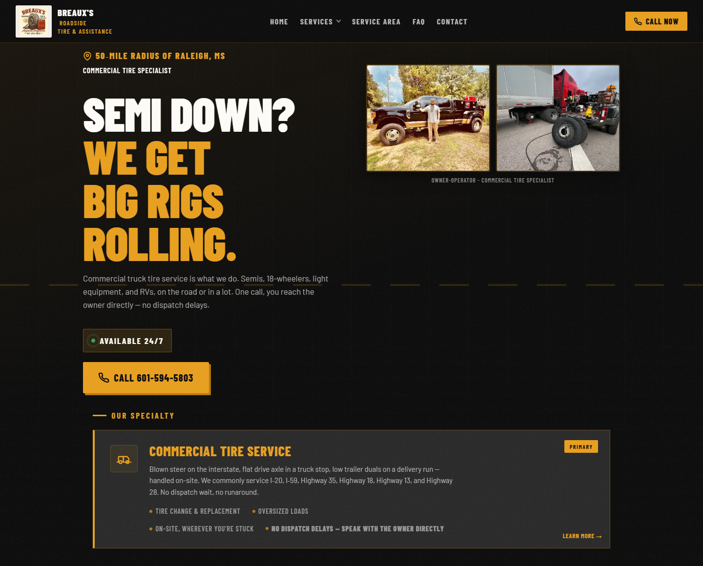

Solving problems through software, not causing problems from software
A mobile tire business had run nearly a year on less than a job a week, with no website and no way to tell which calls were worth paying for. Fixing that meant building the site first, then the measurement behind it. As calls and revenue grew, the bottleneck moved to the paperwork behind every job — six manual systems to reconcile. Nothing off the shelf met the owner's needs, so I wrote the web app the business now runs on daily.



From no calls to custom software
This wasn't a list of separate engagements. It was one problem followed in order — and each step narrowed what the business actually needed built.
The work in detail
Getting calls and tracking their source
Joining GA4, Google Ads, and Local Services Ads to job outcomes. What made spend defensible — and surfaced where the real constraint was.
Read case study Then · Custom software · Workers, D1, R2The web app the business now runs on
Quoting, invoicing, inventory, expenses, and fleet accounts on one job record. Schema design, 25+ migrations against live data, and an integration suite that gates every deploy.
Read case studyShipping and running the app
Writing the app is half of it. The rest is everything that keeps a live system safe to change.
- Cloudflare. Static customer-facing site, Workers, D1, DNS, and redirect rules.
- Data layer. D1 schema design, migrations, and backups behind quoting, invoicing, inventory, expenses, and fleet accounts.
- Safe deploys. An integration suite against real D1 that must pass before merge, migrations written to be additive, and a hook that blocks writes to the production database without a fresh backup.
- GitHub. Organization setup, repositories, and deploy pipelines, with owner-level access held by the business rather than by me.
- Continuity. Accounts, admin access, and email owned by the business — business maintains ownership throughout.
- In progress. Call-capture automation with OpenPhone and structured extraction from call transcripts.